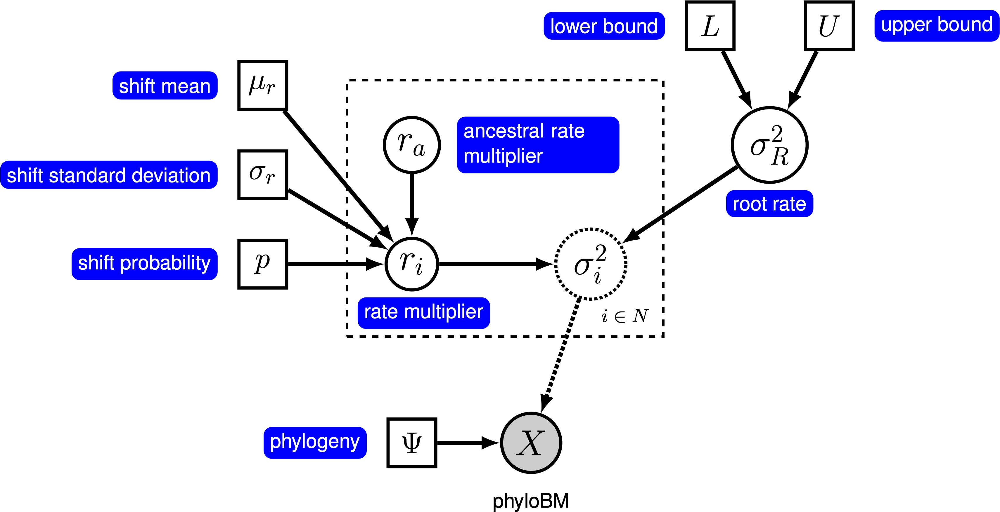

Estimating Branch-Specific Rates of Evolution
This tutorial demonstrates how to specify a relaxed morphological clock model for continuous characters. Specifically, we will specify a ‘‘random local clock’’ model, which allows for a small number of shifts in rates across branches. We provide the probabilistic graphical model representation of each component for this tutorial. After specifying the model, you will estimate the branch-specific rates of Brownian-motion evolution using reversible-jump Markov chain Monte Carlo (rjMCMC).
Relaxing the Morphological Clock
Under a simple Brownian-motion (BM) model, the evolution of a continuous character is entirely determined by a single rate parameter, $\sigma^2$. We can allow rates of evolution to vary among branches of the phylogeny by letting each branch have its own rate parameter, $\sigma^2_i$. However, there will usually be insufficient information in a single continuous character to estimate each branch-specific rate as a free parameter. Therefore, in a Bayesian setting, we specify a ‘‘relaxed morphological clock’’ prior model that strikes a balance between biological realism (rates vary) and statistical reliability (there is only so much information to go around).
Here, we will use the ‘‘relaxed local clock’’ model described by Eastman et al. (2011), known as AUTEUR. In this model, we assume that each branch in the phylogeny either does or does not have a rate shift. When there is no rate shift on a branch, the rate on the branch is inherited directly from its ancestral branch; when there is a rate shift, the ancestral rate is multiplied by a rate shift parameter that is drawn from a prior distribution. We specify a prior probability, $p$, that a given branch experiences a rate shift. For a tree with $n$ branches, the expected number of rate shifts is $E(k) = n \times p$. To control the number of rate shifts, we specify a prior on the expected number of rate shifts, $E(k)$, and then calculate the prior probability for a rate shift on a particular branch, $p = E(k) / n$. The graphical model shows the relationship between the branch-specific rates and priors (fig_bm_relaxed_gm).

In this tutorial, we use the 66 vertebrate phylogenies and (log) body-size datasets from (Landis and Schraiber 2017) to estimate branch-specific rates of body-size evolution.
⇨ The full relaxed BM-model specification is in the file called mcmc_relaxed_BM.Rev.
Read the data
We begin by deciding which of the 66 vertebrate datasets to use. Here, we assume we are analyzing the first dataset (Acanthuridae), but you should feel free to choose any of the datasets.
dataset <- 1
Now, we read in the (time-calibrated) tree corresponding to our chosen dataset.
T <- readTrees("data/trees.nex")[dataset]
We also want to keep track of the number of branches for our relaxed clock model.
ntips <- T.ntips()
nbranches <- 2 * ntips - 2
Next, we read in the character data for the same dataset.
data <- readContinuousCharacterData("data/traits.nex")[dataset]
Additionally, we initialize a variable for our vector of moves and monitors:
moves = VectorMoves()
monitors = VectorMonitors()
Specifying the model
Tree model
In this tutorial, we assume the tree is known without area. We create a constant node for the tree that corresponds to the observed phylogeny.
tree <- T
Rate parameter at the root
The relaxed BM model places a prior on the rate at the root of the tree, $\sigma^2$. We draw this rate parameter from a loguniform prior. This prior is uniform on the log scale, which means that it is represents ignorance about the order of magnitude of the rate at the root of the tree.
sigma2_root ~ dnLoguniform(1e-3, 1)
Because $\sigma^2_R$ is a rate parameter, and must therefore be positive, we use a scaling move called mvScale.
moves.append( mvScale(sigma2_root, weight=1.0) )
Relaxed clock model
We begin the specification of the relaxed clock model by specifying a prior on the probability of rate shifts for each branch. We parameterize our prior expected number of rate shifts, and then compute the probability of a shift on a given branch.
expected_number_of_shifts <- 5
rate_shift_probability <- expected_number_of_shifts / nbranches
Next, we specify the prior distribution on the size of rate shifts (when they occur). We draw each rate shift from a lognormal distribution with a mean of 1, and a standard deviation such that rate shifts range over about one order of magnitude.
sd = 0.578
rate_shift_distribution = dnLognormal(-sd^2/2, sd)
Now, we loop over each branch, drawing a rate-shift multiplier from a mixture distribution. This mixture distribution places prior probability $p$ on the rate multiplier being drawn from the lognormal distribution we just specified, and prior probability $1 - p$ on the rate shift being exactly equal to 1 (i.e., no rate shift). We then compute the rate on the branch by multiplying the ancestral rate by the rate shift multiplier. Note that we loop over the branches in reverse order; this ensures that the ancestral rate exists when we specify the rate for a given branch.
for(i in nbranches:1) {
# draw the rate multiplier from a mixture distribution
branch_rate_multiplier[i] ~ dnReversibleJumpMixture(1, rate_shift_distribution, Probability(1 - rate_shift_probability) )
# compute the rate for the branch
if ( tree.isRoot( tree.parent(i) ) ) {
branch_rates[i] := sigma2_root * branch_rate_multiplier[i]
} else {
branch_rates[i] := branch_rates[tree.parent(i)] * branch_rate_multiplier[i]
}
# keep track of whether the branch has a rate shift
branch_rate_shift[i] := ifelse( branch_rate_multiplier[i] == 1, 0, 1 )
# use reversible-jump to move between models with and without
# shifts on the branch
moves.append( mvRJSwitch(branch_rate_multiplier[i], weight=1) )
# include proposals on the rate mutliplier (when it is not 1)
moves.append( mvScale(branch_rate_multiplier[i], weight=1) )
}
We also keep track of the total number of rate shifts.
num_rate_changes := sum( branch_rate_shift )
Brownian-motion model
Now that we have specified the branch-specific rate parameters, we can draw the character data from the corresponding phylogenetic Brownian-motion model, just as we did for the simple BM models. In this case, we provide the square root of the branch-specific rates to the branchRates argument.
X ~ dnPhyloBrownianREML(tree, branchRates=branch_rates^0.5)
Noting that $X$ is the observed data (), we clamp the data to this stochastic node.
X.clamp(data)
Finally, we create a workspace object for the entire model with model(). Remember that workspace objects are initialized with the = operator, and are not themselves part of the Bayesian graphical model. The model() function traverses the entire model graph and finds all the nodes in the model that we specified. This object provides a convenient way to refer to the whole model object, rather than just a single DAG node.
mymodel = model(sigma2_root)
Running an MCMC analysis
Specifying Monitors
For our MCMC analysis, we need to set up a vector of monitors to record the states of our Markov chain. The monitor functions are all called mn*, where * is the wildcard representing the monitor type. First, we will initialize the model monitor using the mnModel function. This creates a new monitor variable that will output the states for all model parameters when passed into a MCMC function.
monitors.append( mnModel(filename="output/relaxed_BM.log", printgen=10) )
Additionally, create a screen monitor that will report the states of
specified variables to the screen with mnScreen:
monitors.append( mnScreen(printgen=1000, sigma2_root, num_rate_changes) )
Initializing and Running the MCMC Simulation
With a fully specified model, a set of monitors, and a set of moves, we
can now set up the MCMC algorithm that will sample parameter values in
proportion to their posterior probability. The mcmc() function will
create our MCMC object:
mymcmc = mcmc(mymodel, monitors, moves, nruns=2, combine="mixed")
Now, run the MCMC:
mymcmc.run(generations=50000)
When the analysis is complete, you will have the monitored files in your output directory.
⇨ The Rev file for performing this analysis: mcmc_relaxed_BM.Rev
You can then visualize the branch-specific rates by plotting them using our R package RevGadgets. Just start R in the main directory for this analysis and then type the following commands:
library(RevGadgets)
dataset <- 1
my_tree <- read.nexus("data/trees.nex")[[dataset]]
my_output_file <- "output/relaxed_BM.log"
tree_plot <- plot_relaxed_branch_rates_tree(tree = my_tree,
output_file = my_output_file,
parameter_name = "branch_rates")
ggsave("relaxed_BM.pdf", width=15, height=15, units="cm")

Exercise 1
- Run an MCMC simulation to estimate the posterior distribution of the branch-specific rates (
branch_rates) assuming a prior expected number of rates shifts of 5. - Plot the rates among branches under this prior.
- Change the prior expected number of rate shifts to 1, and then plot the branch-specific rates on the tree.
- Compare the posterior distributions for the total number of rate shifts under both priors using
Tracer. Does the posterior distribution for the total number of rate shifts seem to be sensitive to the prior? - Compare the posterior mean estimates for branch-specific rate estimates under each prior. Does the posterior mean estimate branch-rate estimates appear to be sensitive to this prior?
- Eastman J.M., Alfaro M.E., Joyce P., Hipp A.L., Harmon L.J. 2011. A novel comparative method for identifying shifts in the rate of character evolution on trees. Evolution. 65:3578–3589.
- Höhna S., Heath T.A., Boussau B., Landis M.J., Ronquist F., Huelsenbeck J.P. 2014. Probabilistic Graphical Model Representation in Phylogenetics. Systematic Biology. 63:753–771. 10.1093/sysbio/syu039
- Landis M.J., Schraiber J.G. 2017. Pulsed evolution shaped modern vertebrate body sizes. Proceedings of the National Academy of Sciences. 114:13224–13229. 10.1073/pnas.1710920114